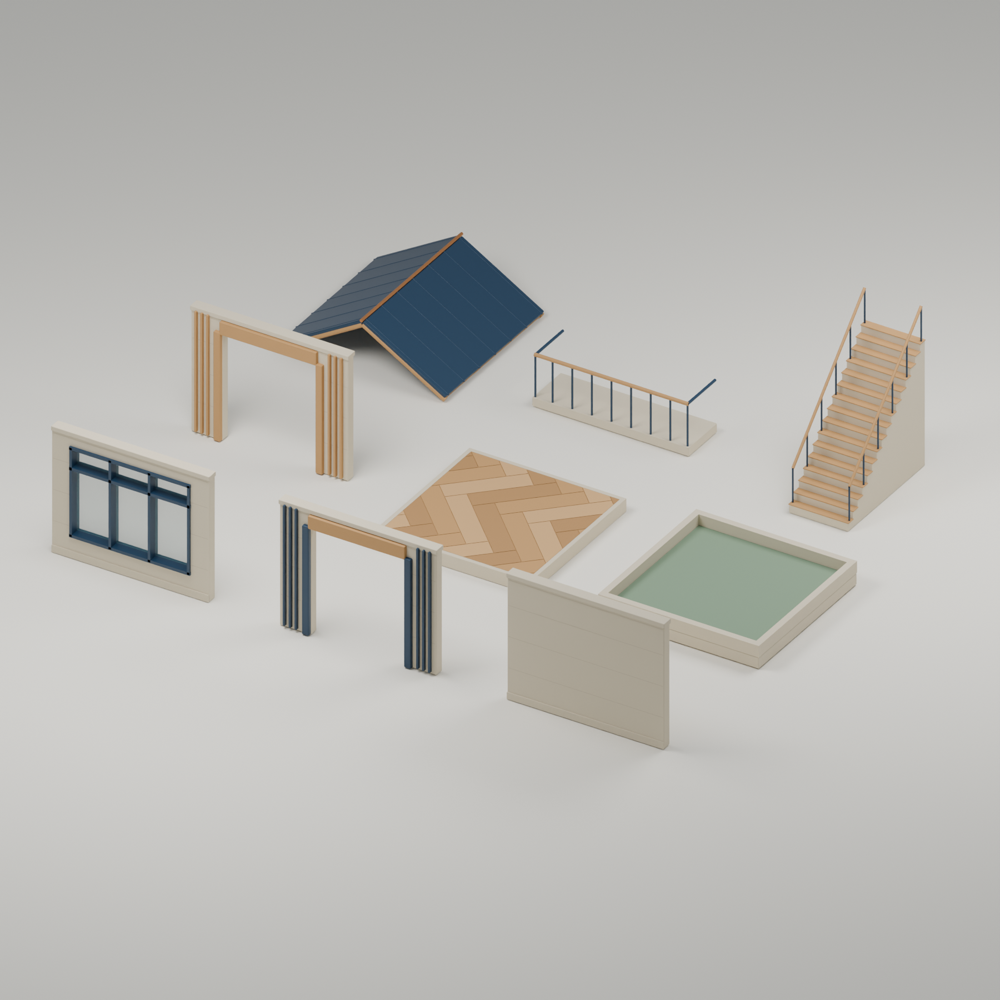
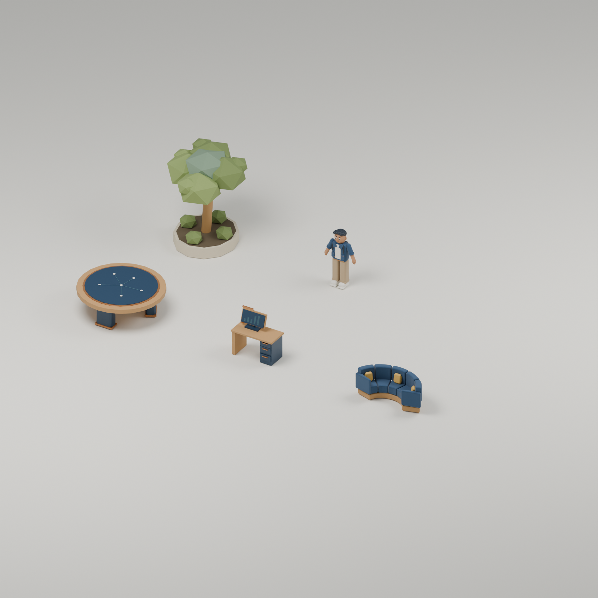
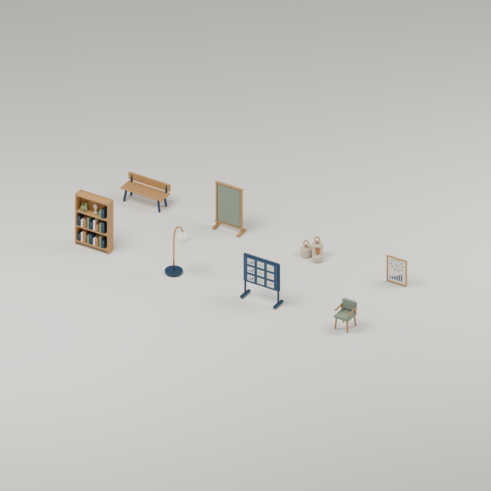
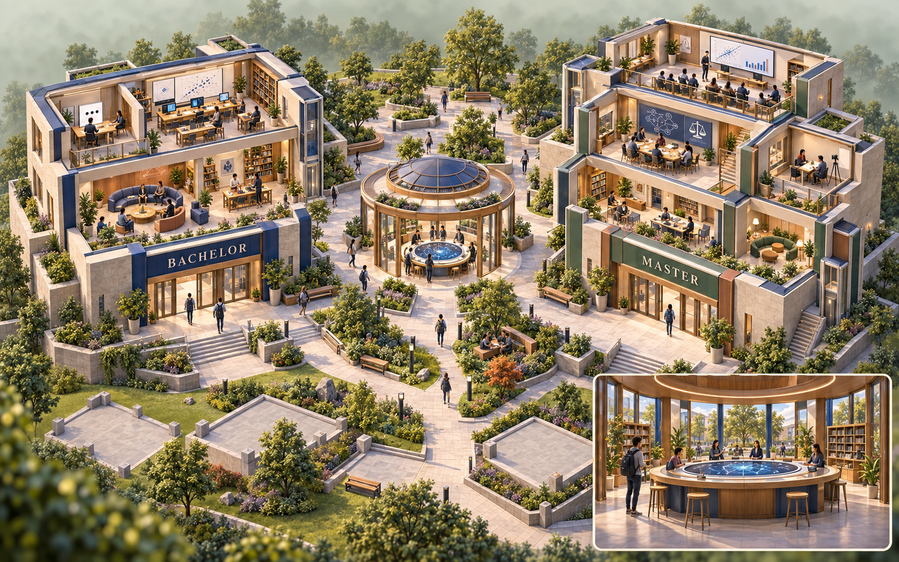
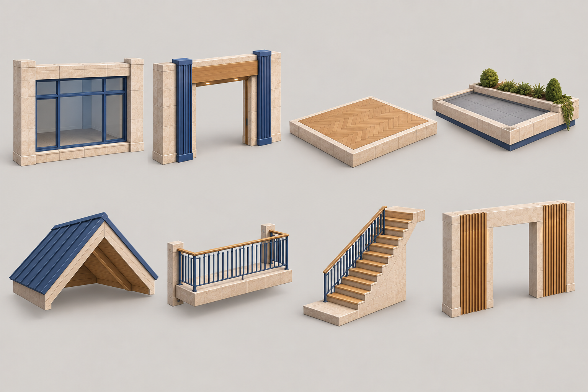
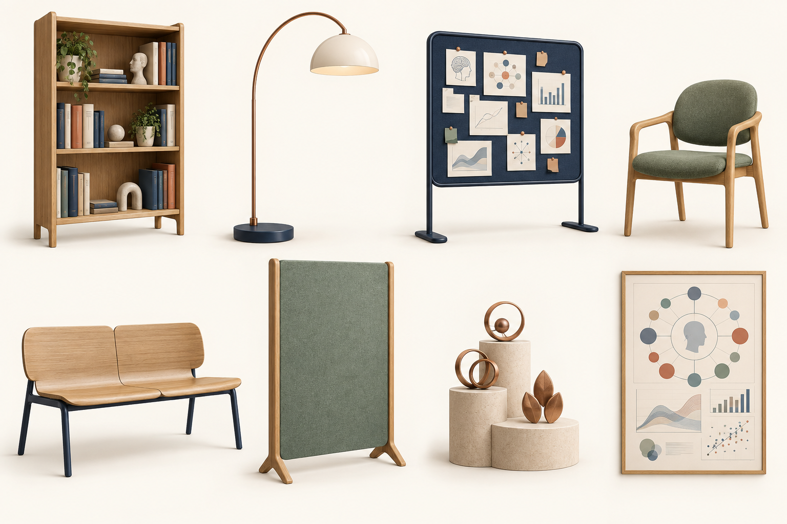
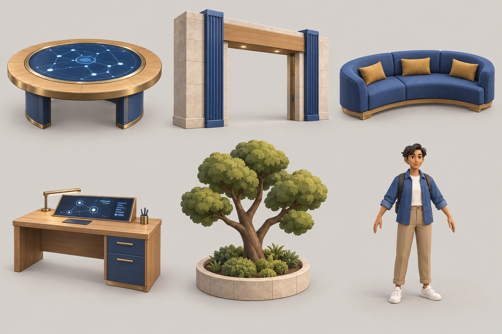
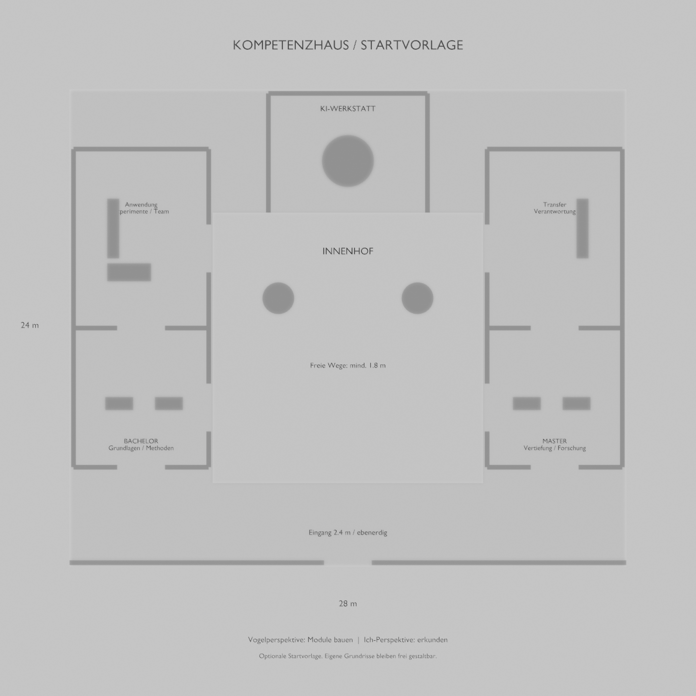
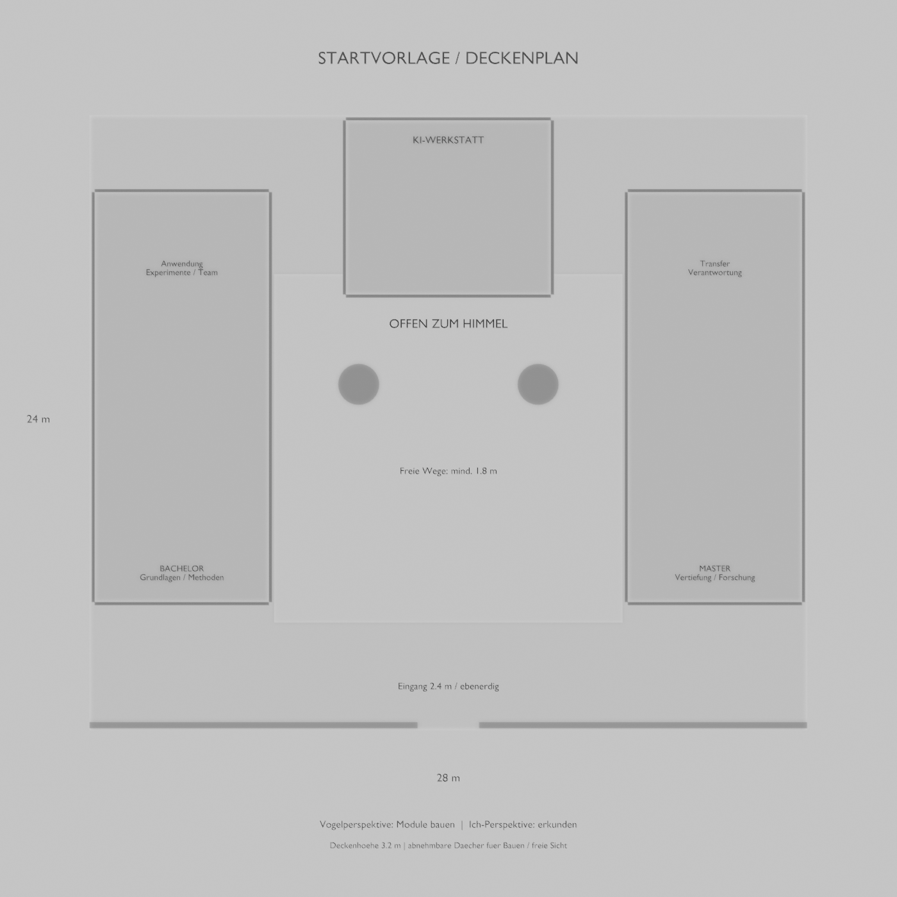

GESTALTUNGSVORLAGEN · ENTWURF
Zwei Häuser. Ein Lerncampus.
Links das Bachelorhaus für Grundlagen, Methoden und angeleitete Forschung. Rechts das Masterhaus für Vertiefung, eigene Forschungsentscheidungen und verantwortlichen Transfer. Beide verbinden wissenschaftliches Arbeiten und berufliche Anwendung. Ein gemeinsamer Innenhof kann zur KI-Werkstatt führen.
Function und Form geprüft · 22 optimierte Modelle exportiert.Die tatsächliche Unity-Szene ist aufgebaut. Physik und Szenengeometrie besitzen eigene Nachweise; Browserbedienung, Bildwirkung, Leistung und Veröffentlichung sind noch in Prüfung. Der zusätzliche Kostenrahmen beträgt 0.
Die tatsächlich gebauten Modelle Blender-Renderings
Diese Bilder zeigen die optimierten Geometrien. Der einmalige Satz aus 22 Modellen umfasst 21’486 Dreiecke. Türen wurden am Mesh vermessen, Treppenstufen und Figurengelenke in der erneut geöffneten Blender-Datei geprüft.
Eine Spielszene enthält viele Instanzen dieser Modelle. Im gemessenen dichten Unity-Aufbau mit allen 43 Modulslots und zwei Häusern mit jeweils 64 Bodenfeldern betrug die Geometrieobergrenze 112’500 Dreiecke. Das liegt unter dem Budget von 160’000, deckt aber nicht jede mögliche Gestaltung ab. Diese Messung ist kein Browser-Leistungsnachweis.



Modell- und Exportnachweis · Unabhängige Quellenprüfung · Optimierung · Gemessene Unity-Szenen · FBX ohne private Pfadmetadaten. Die folgenden Bildkonzepte bleiben als Gestaltungsreferenzen erhalten.

Architektur als freier Baukasten Vorlagen ein-/ausblenden
Grundriss, Raumgrössen, Etagen, Verbindungen, Innenhöfe, Fassaden und Dächer bilden den Gestaltungsraum. Die Teile werden auf einem gemeinsamen Raster kombiniert; kleine Überstände an Abdeckungen und Dachrändern sind bewusst vorgesehen.

Die Referenzbilder geben die Gestaltungsrichtung vor. Die vollständigen Modellmasse inklusive Abdeckungen, Dachüberständen und Treppengeländern stehen im Modellmanifest; die tatsächlichen Masse und freien Öffnungen sind im Modellaudit dokumentiert.
Einrichtung selbst wählen Optionale Möbelebene
Acht zusätzliche Modelle erweitern Lernräume, Lesebereiche und Gesprächszonen. Diese Ebene lässt sich unabhängig von der Architektur öffnen. Die Einrichtung ist als frei wählbare Ausstattung geplant.

- Regal und Leuchte schaffen einen Lesebereich.
- Pinnwand und Poster geben Forschungsräumen eine Funktion.
- Stühle und Bank unterstützen unterschiedliche Gesprächsformen.
- Trennwände gliedern ruhige Lernzonen.
- Das Display zeigt Spielmeilensteine, keine Studienleistungen.
- Das Poster ist zur Wandmontage vorgesehen.
Die acht Referenzen wurden freigegeben und als eigene Blender-Modelle umgesetzt. Lesbare Informationen und Lernaufgaben gehören in die zugängliche Spieloberfläche; die Grafik auf Pinnwand und Poster bleibt illustrative Dekoration.
Lernorte und Spielfigur Ursprüngliche Modellvorlagen

Die Figur ist mit Bewegungszuständen geplant. Tisch und Forschungsarbeitsplatz markieren Lerninteraktionen; Sofa und Baum ergänzen Gesprächs- und Aussenräume. Die vollständigen Modellhüllen enthalten auch Monitor und ausgebreitete Arme.
Optionale Startvorlage im Grundriss Blender-Planungsstand
Die 28 × 24 Meter grosse Vorlage zeigt zwei getrennte Häuser und eine gemeinsame Werkstatt mit ebenerdigem Eingang. Sie legt den freien Baubereich des Spiels nicht fest. Die beabsichtigten freien Arbeits- und Laufwege um den Evidenztisch betragen mindestens 1.8 Meter.


Die Function-Prüfung dieser optionalen Startvorlage ist abgeschlossen. Die Durchgänge wurden mit den erzeugten Modellen abgeglichen; Modellmasse, Physiktests und die noch offene Browserabnahme bleiben getrennte Nachweise.
Alle Referenzdateien bleiben erhalten. Modellmanifest mit Bild-Hashes · Dokumentierte Sichtprüfungen · Prüfablauf und Kostenrahmen